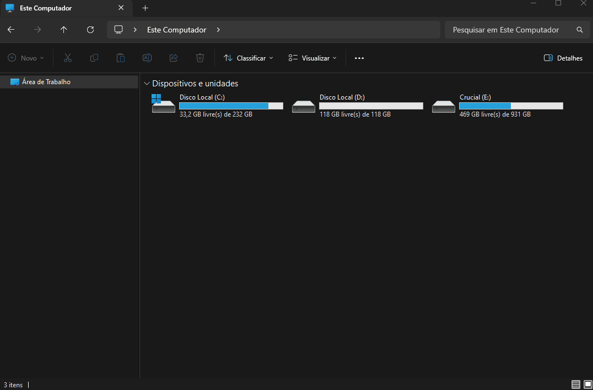
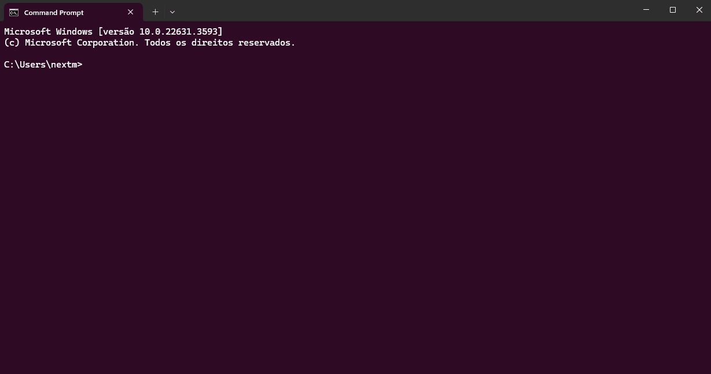
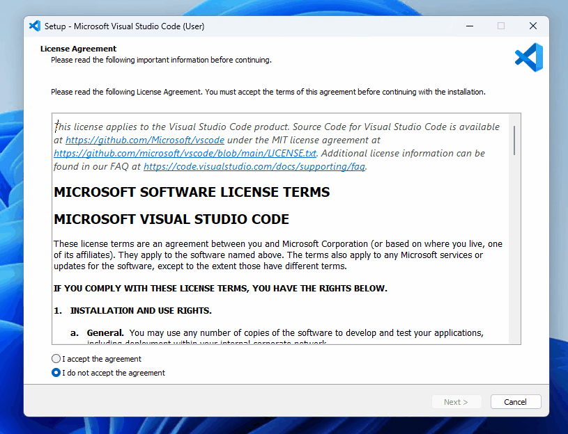
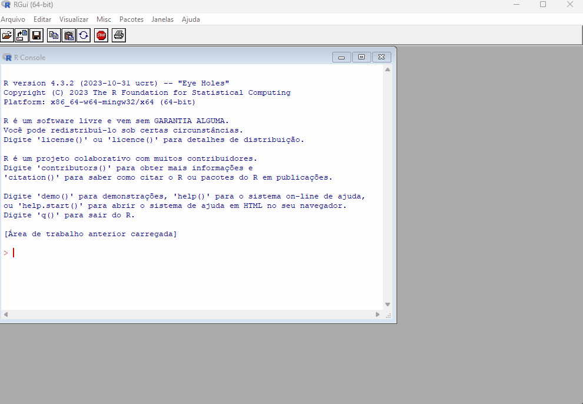
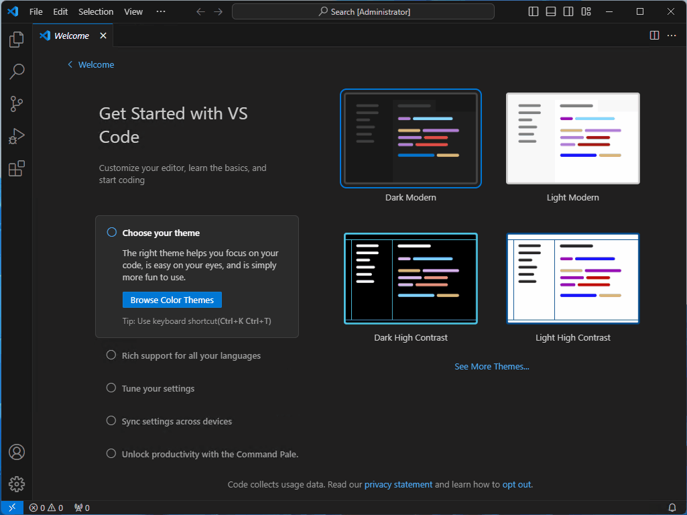
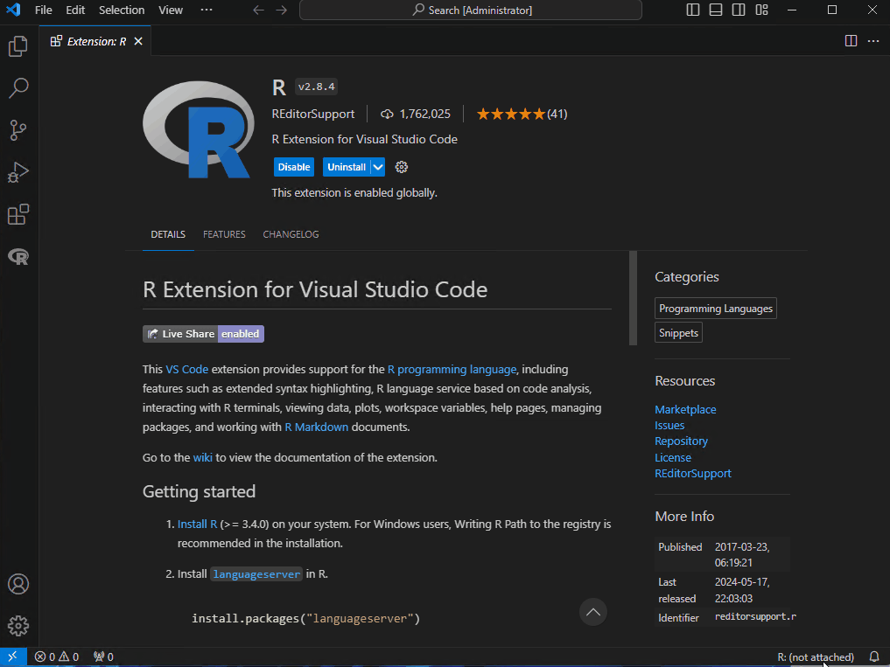
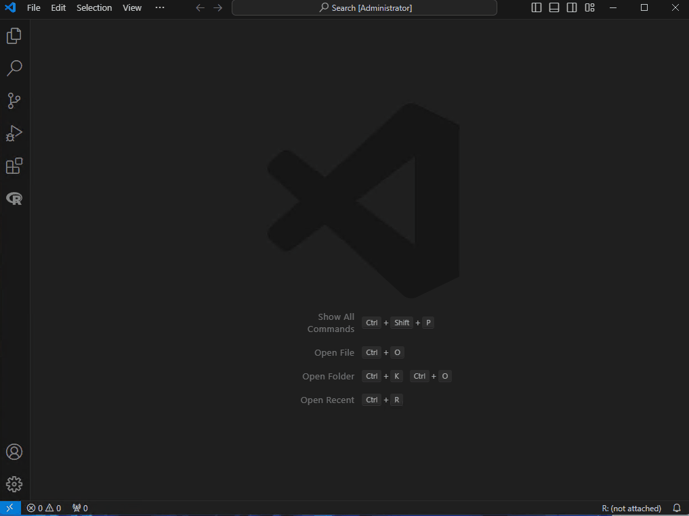

VIII SER - R no VSCODE
Desbloqueie o Poder do R com VSCode: Um Guia Prático para Iniciantes e Especialistas
Configuração do Ambiente
O guia abaixo foi feito para auxiliar na configuração do ambiente de desenvolvimento para R no VSCode no windows 11, mas pode ser adaptado para outras versões do Windows e para outros sistemas operacionais.
- Baixe o R direto do CRAN
- Instale o R e salve o caminho de instalação que será usado mais tarde (Casso já tenha o R instalado, pule para o próximo passo)
- Navegue até o diretório de instalação do R, abra a pasta
librarye copie o caminho do diretório

- Agora vamos salvar uma variável de ambiente com o caminho do diretório library. Abra o CMD do Windows e digite o seguinte comando:
Você pode abrir o CMD do Windows pressionando Win + R e digitando cmd e pressionando Enter
setx R_LIBS_USER "CAMINHO_DO_DIRETORIO_LIBRARY"
Reinicie o cmd e digite echo %R_LIBS_USER% para verificar se a variável foi salva corretamente

- Instale o VSCode a partir do site oficial ou da fonte que preferir e faça a instalação padrão.

- Instale a library
languageserversetuppara facilitar o setup do rlanguageserver.
Você também pode fazer a instalação da library rlaguangeserver manualmente, mas o languageserversetup facilita o processo pois já instala todas as dependências necessárias e configura o ambiente automaticamente.
Como administrador abra o R no aplicativo R e execute o seguinte comando:
install.packages("languageserversetup")
Agora vamos usar a função languageserversetup::languageserver_install() para instalar o rlanguageserver e a função languageserversetup::languageserver_add_to_rprofile() para configurar o ambiente.

- Abra o VSCode e instale a extensão
R

- Vamos abrir o terminal do VSCode para copiar o Rpath.

Tudo Pronto
A patir deste ponto você já pode começar a usar o R no VSCode, porém, se você quiser mais dicas e truques para melhorar a sua produtividade, continue lendo.
Atalhos do RStudio no VSCode
Todos os atalhos do RStudio podem ser usados, porém vamos precisar configurar o keybindings.json para isso. Cole o código abaixo no seu keybindings.json para usar os atalhos do RStudio no VSCode.

[
{
"key": "alt+-",
"command": "type",
// "when": "editorLangId == r && editorTextFocus || editorLangId == rmd && editorTextFocus",
// if you want using quarto, try this
"when": "editorLangId =~ /r|rmd|qmd/ && editorTextFocus",
"args": {"text": " <- "}
},
{
"key": "ctrl+shift+m",
"command": "type",
// "when": "editorLangId == r && editorTextFocus || editorLangId == rmd && editorTextFocus",
"when": "editorLangId =~ /r|rmd|qmd/ && editorTextFocus",
"args": {"text": " %>% "}
},
{
"key": "ctrl+shift+m",
"command": "-workbench.actions.view.problems"
},
// input indicative of r markdown code chunk
{
"key": "ctrl+shift+i",
"command": "editor.action.insertSnippet",
// "when": "editorTextFocus && editorLangId == 'rmd'",
"when": "editorLangId =~ /r|rmd|qmd/ && editorTextFocus",
"args": {
"snippet": "```{r}\n${TM_SELECTED_TEXT}$0\n```"
},
"label": "input indicative of r markdown code chunk"
},
// you can also input indicative of code chunk in `r` file by inserting "# %% ":
// specifics in `https://github.com/REditorSupport/vscode-R/pull/662`
{
"key": "ctrl+shift+i",
"command": "editor.action.insertSnippet",
"when": "editorTextFocus && editorLangId == 'r'",
"args": {
"snippet": "$LINE_COMMENT %% "
},
"label": "input indicative of code chunk"
},
// open help panel for selection
{
"key": "f1",
"command": "r.helpPanel.openForSelection",
"when": "editorTextFocus && editorLangId == 'r' || editorTextFocus && editorLangId == 'rmd'"
},
// read yaml header parameters into `params` when editing an Rmarkdown file
{
"key": "ctrl+shift+p",
"command": "r.runCommandWithEditorPath",
"args": "params <- rmarkdown::yaml_front_matter(\"$$\")$params |> lapply(\\(x) if (is.list(x)) x$value else x)",
"when": "editorTextFocus && editorLangId == 'rmd'"
},
// RStudio keybinding for R Package development
{
"key": "ctrl+shift+b",
"command": "r.install",
"when": "resourceLangId == 'r'"
},
{
"key": "ctrl+shift+e",
"command": "r.check",
"when": "resourceLangId == 'r'"
},
{
"key": "ctrl+shift+t",
"command": "r.test",
"when": "resourceLangId == 'r'"
},
{
"key": "ctrl+shift+d",
"command": "r.document",
"when": "resourceLangId == 'r'"
},
{
"key": "ctrl+shift+l",
"command": "r.loadAll",
"when": "resourceLangId == 'r'"
},
{
"key": "ctrl+alt+p",
"command": "r.runCommand",
"when": "editorTextFocus && editorLangId == 'r'",
"args": ".vsc.browser(httpgd::hgd_url(), viewer = \"Beside\")"
}
]Snippets
Também é possível adicionar snippets para facilitar a escrita de códigos repetitivos. Para adicionar snippets, abra o arquivo snippets.json e crie os snippets que desejar. como no exemplo abaixo que cria um snipet de yml para o quarto.
Para abrir o arquivo snippets.json, pressione Ctrl + Shift + P e digite Preferences: Configure User Snippets e selecione R e depois snippets.json
"QMD: Criar uma nova apresentação QMD": {
"prefix": "qmdjs",
"body": [
"---",
"title: Meu Título",
"author:",
" - name: Marcus Ramalho",
"format:",
" revealjs:",
" incremental: true",
" transition: slide",
" background-transition: fade",
" theme: night",
"css: styles.css",
"date: today",
"footer: Universidade Federal Fluminense ",
"incremental: true",
"---",
"",
"# ${1:title}",
"",
"${2:content}"
],
"description": "Cria um cabeçalho de um arquivo QMD para apresentações em revealjs"
},Extensões Recomendadas
- Copilot ou tabnine
- Quarto
- Live Share
- Material Theme Icons